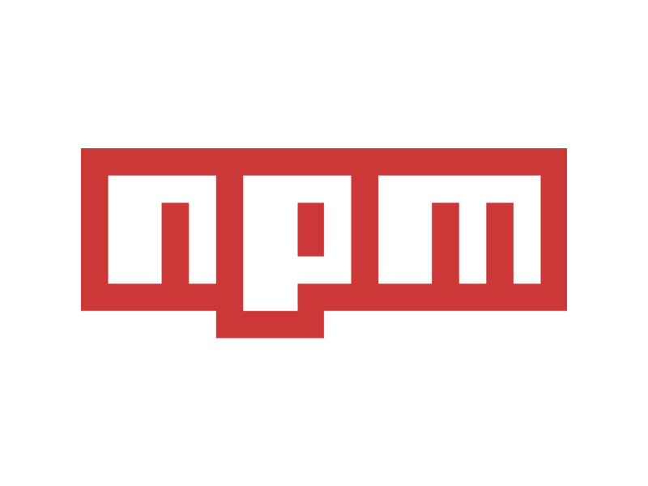
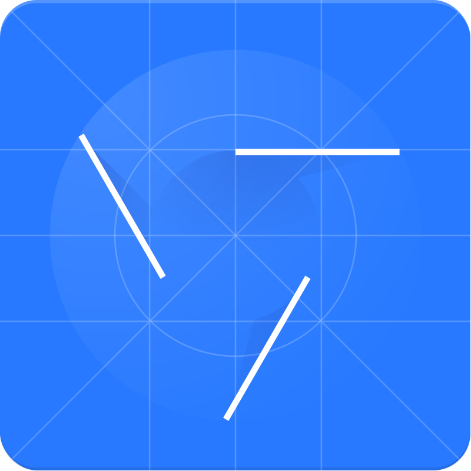

Dobrze radzę sobie z manipulacją elementów na stronie.
Umiem korzystać z Oddzielnych API, jak równierz
korzystać z funkcji asynchronicznych. Posiadam
znajomość dogmatu SOLID.
Opanowałem PHP na podstawowym poziomie, aby móc
redagować kod, generować strony, a także nawiązywać
połączenie z serwerem SQL.
Znam SQL na poziomie, umożliwiającym tworzenie zapytań
(w tym używając left oraz right JOIN), widoków oraz
użytkowników.
narzędzia:
GIT

NPM
web pack
eslint

dev Tools
mark down
semantyczny
HTML
oraz dobra znajomość
CSS
Większość moich prac nie opiera się na samych DIV'ach.
Staram się poszerzać swoją wiedzę z zakresu web
accesibility.
Przy kodowaniu stron opieram się głównie o GRID, jednak
równie dobrze znam flexbox. Potrafię korzystać z animacji,
tranzycji i transformacji elementów.